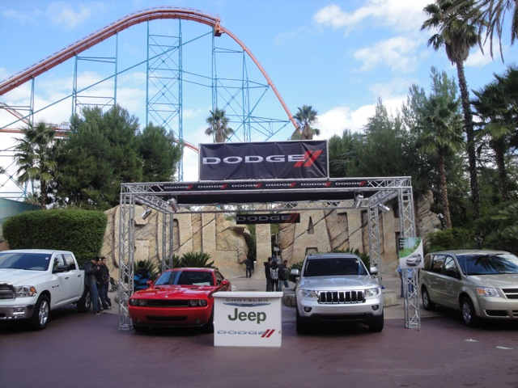
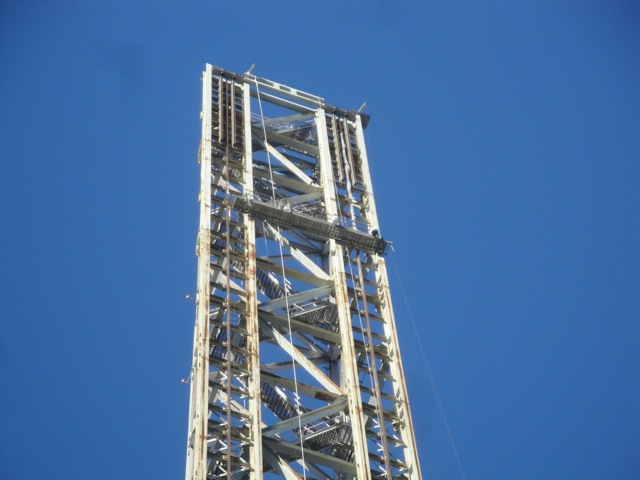
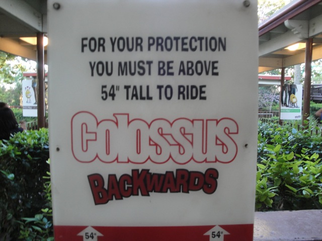
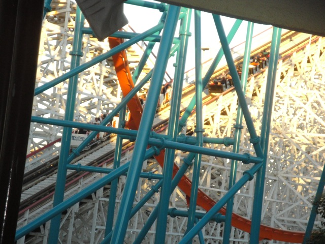
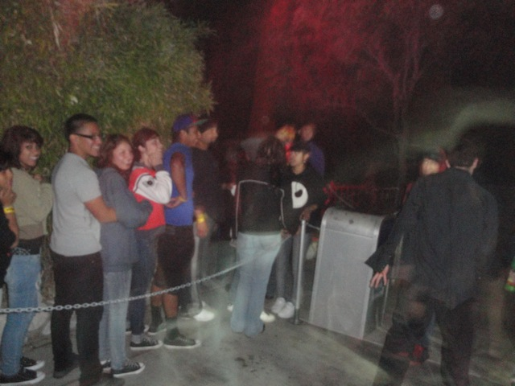
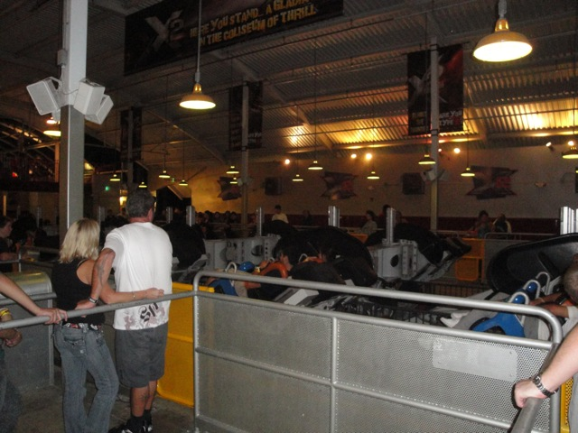

Fall 2010 Photos
Disneyland Resort Six Flags Magic Mountain
All right. For this year, I took two different visits to SFMM again. And as always, I'm combinding the two into one update. Anyways, for one of those visits, I tried using the California Public Transportation System to get there to see how that is.
So far, it's not going so great. It's really not a good sign when you have to take 4 buses and a train to travel only 20 miles.
This place is lovely. It's simply a beautiful paradise. The only thing missing from this little peice of heaven is hypodermic needles, and then I'd want to live here for the rest of my life. *end sarcasm*
Ok, now here's what really sucks. Having your bus be late, which only gives you a few minutes to catch your train, however, to get on the train, you have to buy your ticket from this really confusing hard to use the person who designed this was totally drunk machine to get your ticket. I ended up having someone walk me through buying the ticket, WHILE THE F*CKING TRAIN WAS PULLING INTO THE STATION!!!! To make matters worse, after getting my ticket, I somehow dropped my wallet, because when I was about to board the train, I noticed it was gone, so in a mad panic attack, I ran to the machine and looked around on the floor for it, and probably looked like I was on crack while doing it. Then, luckily someone found it and asked if this was what I was looking for. Thank god the people there actually had a sense of morality and didn't just take all my stuff. So then, I grabbed my wallet, and made a mad dash to the train and just barely made it on. Yeah, I'm not taking California Public Transportation again.

Anyways, at SFMM. It appears Goliath is sponsered by these cars that I wish I had driven. (And I really don't like driving that much.)
 Visit #1. Superman appears to have these wires coming down from it.
Visit #1. Superman appears to have these wires coming down from it.

Visit #2. It almost looks like they're about to start painting it.
Hello Psyclone Trains. We'll see you later.
Yay!!! Incrediblecoasters Takeover of Forewords Collosus.
Lame. They put the stupid hair gel trains back on Viper. =(
Yep. We're here for Fright Fest as well as just for the day.
Hello Heckles & Twich. We'll see you later tonight at your show.
Yeah. This has got to be one of the most awesome and pointless I have ever done on Facebook as well as on Incrediblecoasters.
Hey look!! They updated the Batman mural so they could even paint it blue in there.
 X2 Area 19 kicked ass!!!! Dear Six Flags, please have this again for Fright Fest 2011. It is awesome. From Incrediblecoasters.
X2 Area 19 kicked ass!!!! Dear Six Flags, please have this again for Fright Fest 2011. It is awesome. From Incrediblecoasters.
 "Let the bodies hit the Floor!! Let the bodies hit the floor!!! Then once they hit the floor, burn them in that fire over there."
"Let the bodies hit the Floor!! Let the bodies hit the floor!!! Then once they hit the floor, burn them in that fire over there."
Cody: "WHY SO SERIOUS!!!!!!!?" Fright Fest Monster: "F*ck my Afterlife." Kevin: "Am I seriously supposed to be scared by this guy?"
 All right. Time for the moment we have all been waiting for. We're going to ride Collosus...
All right. Time for the moment we have all been waiting for. We're going to ride Collosus...
BACKWARDS!!!!!!!!!

Backwards Collosus kicks ass!!! Seriously, this ride's rating goes up an entire number just by going backwards.
You people riding Collosus forewords are coaster pansies!!! Grow some balls and do it backwards!!!! (This excludes kids too small for Backwards Collosus but tall enough for Regular Collosus.)
Have fun you guys!!!

Oh yeah, and sometimes, there would be Coaster Races between Forewords Collosus and Backwards Collosus. And they were awesome!!! =) Even if we did lose. =(
Yeah. That's the sign of quality right there.
Yeah. We're gonna marathon this thing.
 Now I know what you're thinking. "What a sh*tty photo. Why did you put it in the update?" Well, mostly because of that dot right there. That, if you didn't know, is actually the planet Jupiter. And yeah, it's freaking cool. Plus, how many people can say that they have Riddlers Revenge and the planet Jupiter in the same photo? Ok, that's enough of my astronomy dork side.
Now I know what you're thinking. "What a sh*tty photo. Why did you put it in the update?" Well, mostly because of that dot right there. That, if you didn't know, is actually the planet Jupiter. And yeah, it's freaking cool. Plus, how many people can say that they have Riddlers Revenge and the planet Jupiter in the same photo? Ok, that's enough of my astronomy dork side.
New at Longhorns BBQ is Pecan Pie in a Cup. And yes, it is indeed very good.
Yup. Fright Fest has officially begun.
First off, we saw the Heckles & Twich Show. Personally, I kind of found it to have declined in quality this year. But still, it's Heckles & Twich. And they are awesome.
Time for some more scares up on Samauri Summit.

Meh, you're not scary. Now Youtube Trolls are scary.
All right. How about a little bit of Roaring Rapids to make this night much scarier.
"THIS IS THE DUMBEST THING I HAVE EVER DONE!!!!"
Have fun you guys!!! Try not to get Hypothermia out there!!
"Oh Come on!!! I didn't get that wet!!! Stop being a pussy and get your ass on Roaring Rapids right now!!!"
"What the hell is that?"
Six Flags Magic Mountain at Night.
"What do you mean it's for children only!!?"
Kevin: "Dude!!! Joker's Hideout is so trippy when wearing these 3D Glasses!!" Cody: "Hey Kevin!!! Look out for that...Uh.... Never mind." *Evil Laugh*
One last ride on Ailean Themed X2 before it goes. =(

"It's the end of the update as we know it. It's the end of the update as we know it. And I feel fine."
Home